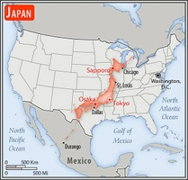

Introduction
In 1603, after decades of civil warfare, the Tokugawa shogunate (a military-led, dynastic government) ushered in a long period of relative political stability and isolation from foreign influence. For more than two centuries this policy enabled Japan to enjoy a flowering of its indigenous culture. Japan opened its ports after signing the Treaty of Kanagawa with the US in 1854 and began to intensively modernize and industrialize.
During the late 19th and early 20th centuries, Japan became a regional power that was able to defeat the forces of both China and Russia. It occupied Korea, Formosa (Taiwan), and southern Sakhalin Island. In 1931-32 Japan occupied Manchuria, and in 1937 it launched a full-scale invasion of China.
Japan attacked US forces in 1941 - triggering America's entry into World War II - and soon occupied much of East and Southeast Asia. After its defeat in World War II, Japan recovered to become an economic power and an ally of the US. While the emperor retains his throne as a symbol of national unity, elected politicians hold actual decision-making power.
Following three decades of unprecedented growth, Japan's economy experienced a major slowdown starting in the 1990s, but the country remains an economic power. In March 2011, Japan's strongest-ever earthquake, and an accompanying tsunami, devastated the northeast part of Honshu island, killed thousands, and damaged several nuclear power plants. Prime Minister Shinzo ABE was reelected to office in December 2012, and has since embarked on ambitious economic and security reforms to improve Japan's economy and bolster the country's international standing.
In November 2019, ABE became Japan's longest-serving post-war prime minister.
Geography
Location
Eastern Asia, island chain between the North Pacific Ocean and the Sea of Japan, east of the Korean Peninsula
Area Comparitive
slightly smaller than California
Climate
varies from tropical in south to cool temperate in north
Energy
Electricity Access
electrification - total population: 100% (2020)
Electricity Production
989.3 billion kWh (2016 est.) country comparison to the world: 5
Electricity Consumption
943.7 billion kWh (2016 est.) country comparison to the world: 4
Military and Security
Military and Security forces
Japan Self-Defense Force (JSDF): Ground Self-Defense Force (Rikujou Jieitai, GSDF; includes aviation), Maritime Self-Defense Force (Kaijou Jieitai, MSDF; includes naval aviation), Air Self-Defense Force (Koukuu Jieitai, ASDF); Japan Coast Guard (Ministry of Land, Transport, Infrastructure and Tourism) (2020)
Military Expendatures
1% of GDP (2020), 1% of GDP (2019), 0.93% of GDP (2018), 0.93% of GDP (2017), 0.94% of GDP (2016) country comparison to the world: 125
Military and Security Service Personel Strengths
the Japanese Self Defense Force (JSDF) is comprised of approximately 240,000 active personnel (145,000 Ground; 45,000 Maritime; 45,000 Air; 4,000 Joint Forces); 14,000 Coast Guard (2020)